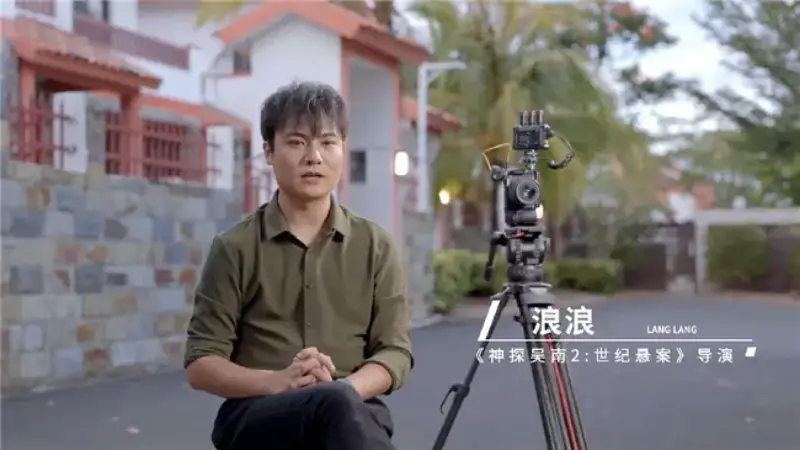
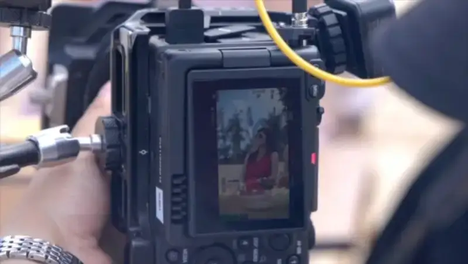
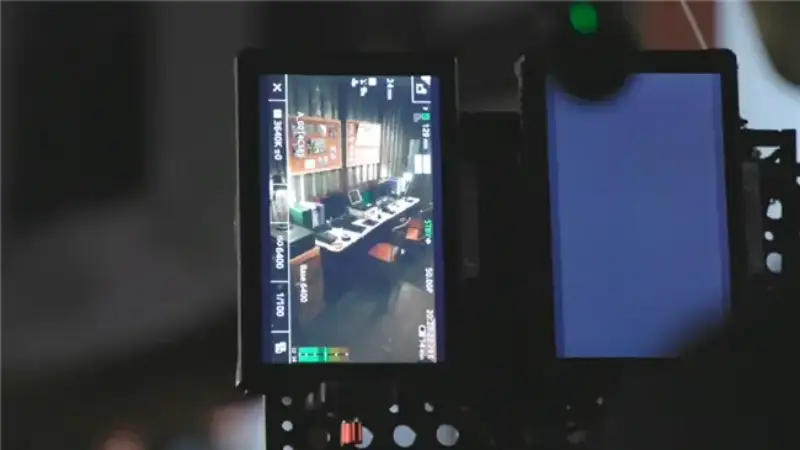
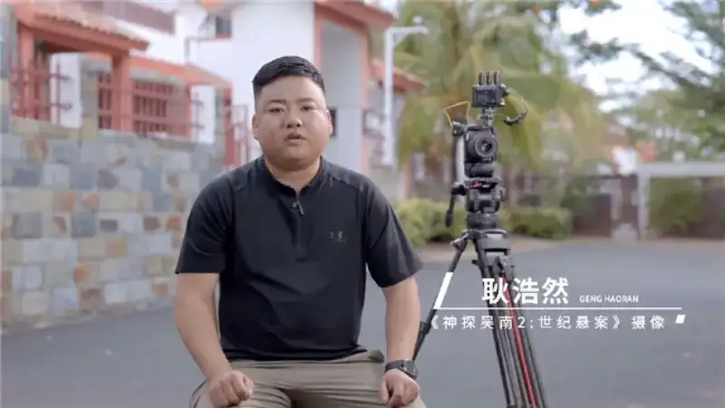
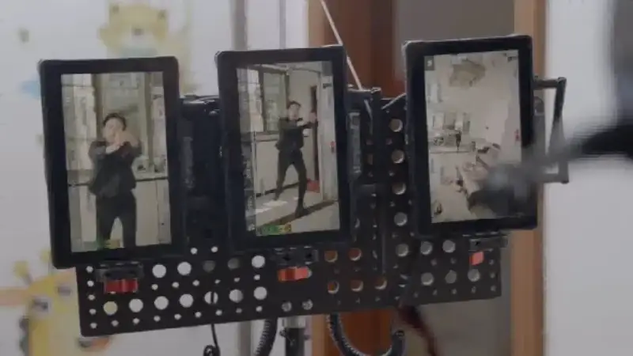

As the short-drama industry enters a premium stage, image quality is becoming a key way production companies set themselves apart. As a leading production company in short drama, Huayuanian Pictures, or Huayuanian for short, has always held high standards for visual expression. Its hit series The Nine-Year-Old Detective, Season 1, drew more than 1 billion views after launch, thanks to its twisting plot and strong production. It also made the nine-year-old detective a beloved figure.
Detective Wu Nan 2: The Century-Old Case has now sparked a new wave of interest. Case within case, trap within trap, every moment is full of suspense and twists. Pre-launch reservations have passed 1 million. In the early planning of Detective Wu Nan 2, the directing team set higher demands for the visual language of a crime mystery. They wanted to show the visual tension of the story better. The Canon EOS C50 became the core camera for the shoot. It performed strongly in controlling the layers of light and shadow, and in capturing the fine facial expressions during psychological confrontations. This gave the imagery of a mystery short drama a richer presentation.
No Highlight Blowout, Layered Shadows: How the CanonEOS C50Performs in Real High-Contrast Light
The visual tension of a mystery short drama often hides in subtle layers of light and shadow: deep shadows, layered rim light, and fleeting micro-expressions on the actors' faces. To build a tight, suspenseful mood, the camera must deliver consistent capture quality across different lighting environments.

Lang Lang, director of Detective Wu Nan 2: The Century-Old Case
During the actual shoot of Detective Wu Nan 2, the crew faced different environments, such as bright beach scenes and night scenes inside a command vehicle. Keeping a consistent look across these two settings was a key concern in pre-production. The Canon EOS C50's 7K full-frame CMOS sensor and DIGIC DV 7 image processor gave a solid quality base for this need: more resolving power, clearer detail, and a better capture of the emotion in close-ups.
The beach scenes were hard because of the light. Sunlight reflecting off the sand easily causes highlight blowout and lost detail. The EOS C50's Canon Log 2 gamma offers more than 15 stops of dynamic range, and it preserves the layered information from highlights to shadows. The camera's 4:2:2 10-bit in-camera recording gives ample color depth and smooth gray-scale transitions, so the mood of the frame is presented accurately. After the shoot, director Lang Lang said: The overall stability and adaptability of the Canon EOS C50 met my expectations. The midday beach light was strong and reflective, and I worried about overexposed faces or lost sand detail. But the final image had clean light-and-shadow layers, and the key detail stayed intact. The color also fit the needs of the shoot. The sea, the sand, and the police uniform were clearly separated, with no saturation blowout in the strong light.

Bright beach scenes: high dynamic range balances light and shadow detail
Clean Shadows, Natural Skin Tones: How Dual Native ISOISORestores the Real Mood of Tight Spaces
If the bright beach tested dynamic range, the night scenes inside the vehicle posed the opposite challenge. The crew had to keep the shadow mood, keep the image clean, and still capture facial detail clearly. For a mystery, facial close-ups are the core visual language of psychological conflict. But in low light, forcing the brightness up often makes skin look gray and raises noise, which weakens the emotional tension of the frame.
The dual native ISO mode of the Canon EOS C50 proved its key value. In the tight, closed space of the command vehicle, a large lighting setup would have been slow and laborious, and it would have broken the real, oppressive mood of the scene.

Dual native ISO delivers clean, natural low-light imagery
Director Lang Lang said: The space inside the vehicle was quite small, and we lit it with just a few small fill lights under limited light. Once we set the native ISO to 6400, the shadow detail was clearly visible, and the noise stayed within a reasonable range. With the clean image from high sensitivity, and Canon's stable skin-tone reproduction, the crew finished the shoot with only a simple fill-light plan. This saved a complex lighting setup and kept the real, oppressive mood inside the vehicle, so the undercurrents between the actors reached the audience accurately.
Great and Fast: How the CanonEOS C50Boosts the On-Set Efficiency of Short Drama
A premium short drama needs both high quality and a tight pace. The demanding rhythm requires the crew to turn every minute into usable footage. The Canon EOS C50 supports on-set efficiency through its body design and smart assist systems. The small, compact body of the EOS C50 eases the physical burden on the camera operator when framing in complex environments.

Gen Haoran, cinematographer of Detective Wu Nan 2: The Century-Old Case
Gen Haoran, the cinematographer of Detective Wu Nan 2, felt this directly. He said: The EOS C50 has 14 customizable shortcut keys. We set often-used functions such as focus mode to shortcut keys. In high-intensity scenes like a chase, we could operate by feel without looking down to find buttons. This saved a lot of shooting time. The LCD touch logic is clear, and adjusting the monitoring ratio, shutter, and other parameters went smoothly.
This shift from digging through menus to quick blind operation keeps parameter changes from interrupting the shooting rhythm, and it protects on-set execution efficiency.
Custom shortcuts plus intuitive LCD touch keep the shoot moving
Detective Wu Nan 2 also includes many close-ups of police investigation and intense chase scenes. In scenes with frequent framing changes and strong actor movement, the EOS C50's Dual Pixel CMOS autofocus, paired with EOS iTR AF X technology, provided reliable focus for complex dynamic scenes. This smart focus management was proven even more in the action scenes. Director Lang Lang said: In the chase scenes, with the actors running fast and fighting, dynamic focus tracking kept the subject locked. There was no focus pull-off despite the big movements, and it met the demands of a high-intensity shoot. The stable autofocus let the cinematographer shift full attention to compositional aesthetics and camera blocking, and it released the crew's productivity.

Focus responds smoothly to fast-moving subjects
For premium short drama, image quality is the base of the work, and efficiency keeps production on schedule. Getting both is the core standard crews use to choose a camera. Huayuanian's Detective Wu Nan 2, shot on the EOS C50, offers a valuable reference for the whole short-drama industry. Today, audiences demand higher image quality from short dramas, and creators need more professional and efficient equipment to support their work. With its balance of quality and efficiency, the Canon EOS C50 has become a reliable choice for premium short dramas such as Detective Wu Nan 2: The Century-Old Case.